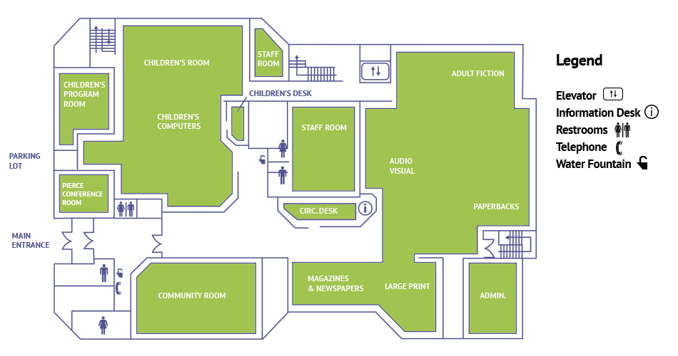

INFRASTRUCTURE
A library's infrastructure is the silent orchestrator, harmonizing physical spaces, cutting-edge technology, and a treasure trove of knowledge. Beyond its walls, the library stands as a beacon of intellectual exploration and community connection. Architecturally, it invites patrons into spaces designed for both solitude and collaboration. Meticulously organized bookshelves and stacks house a diverse array of literary wonders, waiting to be discovered. The technological tapestry seamlessly weaves together library management systems, digital catalogs, and internet access, propelling the library into the digital age. Accessible design ensures inclusivity, offering a haven for all seekers of knowledge. Security measures preserve the intellectual h eritage, allowing the library to flourish as a community hub where minds converge, ideas blossom, and the rich tapestry of human experience unfolds. The library's infrastructure is the foundation upon which a vibrant and enlightened community is built, where the pursuit of knowledge is celebrated and connectivity flourishes. We believe that accessing knowledge should be straightforward, and our website aims to enhance your library experience.
